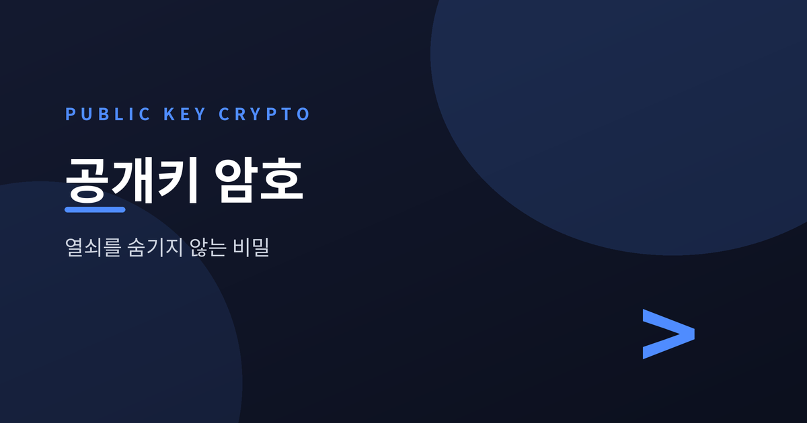
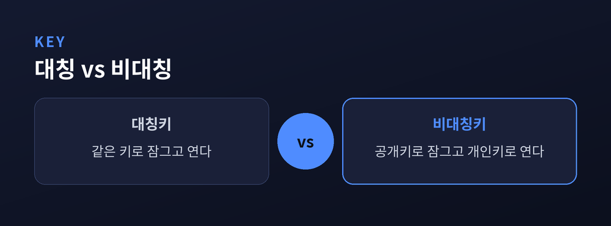
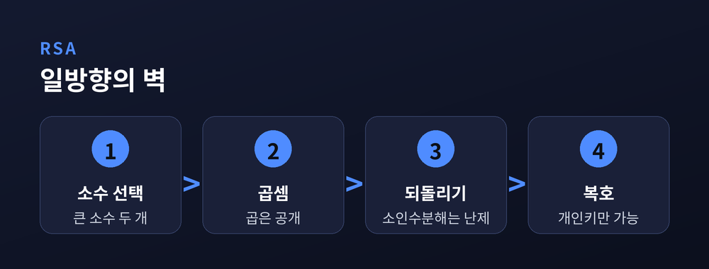
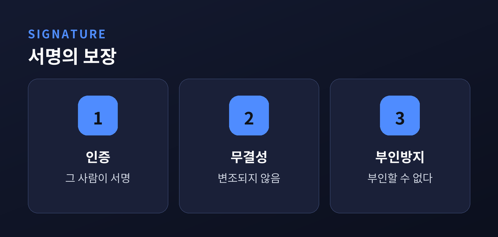
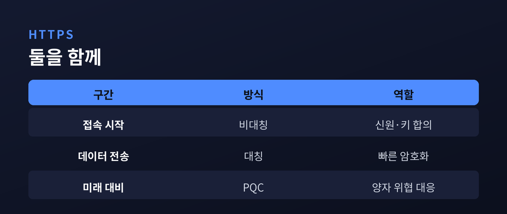

열쇠를 숨기지 않고 비밀을 지키는 법
이번 글에서는 공개키 암호, 다른 말로 비대칭 암호의 원리를 정리해 보겠습니다. 자물쇠는 온 세상에 나눠주면서도 비밀은 지켜지는, 언뜻 모순처럼 들리는 이야기입니다. HTTPS 자물쇠 아이콘부터 전자서명까지, 지금 우리가 쓰는 디지털 신뢰의 밑바닥에 이 기술이 깔려 있습니다.

예전에는 비밀을 주고받으려면 같은 열쇠 하나를 서로 미리 나눠 가져야 했습니다. 이것을 대칭키 암호라고 부릅니다. 문제는 그 열쇠 자체를 어떻게 안전하게 전달하느냐였습니다. 열쇠를 보내는 길목에서 누군가 가로채면 그것으로 끝이었습니다.
지금은 다릅니다. 1976년 디피와 헬만이 제시한 발상은 열쇠를 두 개로 나눕니다. 하나는 누구에게나 공개하는 공개키, 하나는 주인만 감추는 개인키입니다. 공개키로 잠근 것은 오직 짝이 되는 개인키로만 열립니다.
두 키는 수학적으로 이어져 있습니다. 그런데도 공개키만 보고 개인키를 계산해내는 일은 사실상 불가능합니다. 그래서 자물쇠는 길거리에 붙여두어도 안전합니다. 편지를 넣는 투입구는 공개해도, 안의 편지를 꺼내는 열쇠는 주인만 쥐고 있으니까요.

그렇다면 공개키로 개인키를 못 구한다는 말은 어떻게 성립할까요. RSA는 그 근거를 소수의 성질에서 찾습니다.
먼저 아주 큰 소수 두 개를 고릅니다. 이 둘을 곱한 값은 공개해도 좋습니다. 하지만 그 곱을 다시 원래의 두 소수로 쪼개는 일, 곧 소인수분해는 수가 커질수록 감당하기 어려워집니다. 고전 컴퓨터로 이 문제를 빠르게 푸는 방법은 아직 알려져 있지 않습니다.
두 수를 곱하는 것은 순식간입니다. 그러나 그 결과만 보고 원래의 두 수를 알아내는 데는 천문학적인 시간이 듭니다. 이 한 방향으로만 쉬운 성질, 바로 일방향성이 RSA를 떠받칩니다.
디피-헬만 키 교환도 같은 결을 따릅니다. 두 사람이 공개된 통로로 값을 주고받으면서도, 엿듣는 이는 알 수 없는 공통의 비밀에 도달합니다. 여기서는 소인수분해 대신 '이산로그'라는 또 다른 되돌리기 어려운 문제가 자물쇠 역할을 합니다.

키 한 쌍을 정반대로 쓰면 전혀 다른 쓸모가 생깁니다. 이번에는 개인키로 잠그고 공개키로 엽니다. 이것이 디지털 서명입니다.
서명하는 사람은 문서를 짧은 요약값으로 압축한 뒤, 그 요약값을 자신의 개인키로 처리해 서명을 만듭니다. 받는 사람은 서명자의 공개키로 이를 풀어, 자신이 직접 계산한 요약값과 맞대어 봅니다. 둘이 일치하면 진짜입니다.
개인키 없이 유효한 서명을 흉내 내는 것은 불가능합니다. 덕분에 서명은 세 가지를 한꺼번에 보장합니다. 그 사람이 서명했다는 인증, 문서가 손대어지지 않았다는 무결성, 그리고 서명한 사실을 부인하지 못하게 하는 부인방지입니다.
암호화가 '받는 사람만 읽게' 하는 장치라면, 서명은 '보낸 사람이 누구인지 증명'하는 장치입니다. 같은 열쇠 한 쌍이 방향만 바꾸어 두 일을 해냅니다.

비대칭 암호에는 분명한 약점이 있습니다. 계산이 무겁고 느립니다. 그래서 대용량 데이터를 통째로 암호화하는 데는 어울리지 않습니다.
현실의 HTTPS는 영리하게 둘을 엮습니다. 접속을 시작할 때만 느린 비대칭 암호를 써서 서버의 신원을 확인하고, 그 자리에서 양측이 공통의 세션 키를 안전하게 합의합니다. 합의가 끝나면 그때부터는 빠른 대칭 암호로 데이터를 주고받습니다. 무거운 열쇠는 문 여는 순간에만, 가벼운 열쇠는 대화 내내 쓰는 셈입니다.
다만 이 견고함이 영원하지는 않습니다. 1994년 쇼어의 알고리즘은 양자컴퓨터라면 소인수분해와 이산로그를 훨씬 빠르게 풀 수 있음을 보였습니다. RSA의 토대가 흔들릴 수 있다는 뜻입니다. 그래서 미국 NIST는 2024년, 격자 문제 등에 기반한 양자내성암호 표준을 확정해 대비를 시작했습니다. 완성된 기술이라기보다, 위협에 맞춰 바닥을 갈아 끼우는 중입니다.

정리하면 이렇습니다. 공개키 암호의 아름다움은 '숨김'이 아니라 '비대칭'에 있습니다. 자물쇠를 온 세상에 나눠주고도 열쇠 하나만 지키면 비밀이 성립합니다.
— 열쇠를 감추지 않고도 비밀을 지킬 수 있다는 것, 그 역설이 오늘의 인터넷을 지탱합니다.
숨길 수 없는 것을 공개하고, 지켜야 할 것만 감추는 지혜. 다음에 주소창의 자물쇠를 보신다면, 그 안에서 조용히 돌아가는 이 원리를 한 번쯤 떠올려 보시면 좋겠습니다.
참고 소스